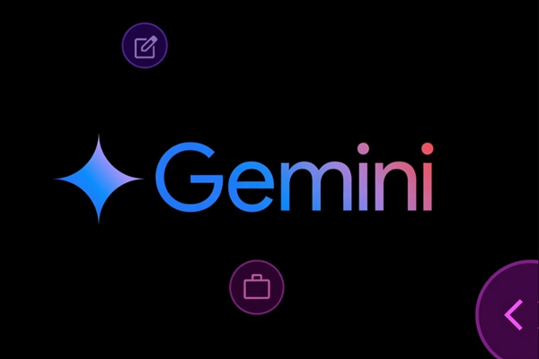
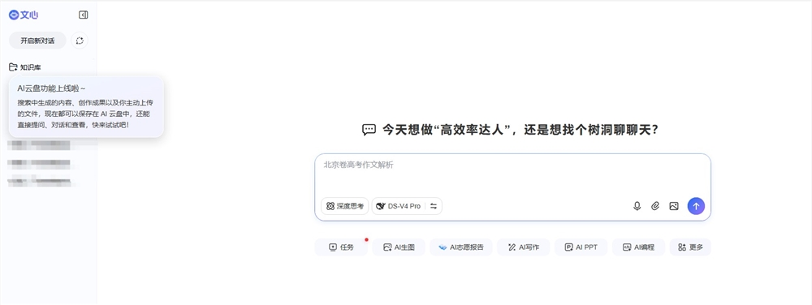
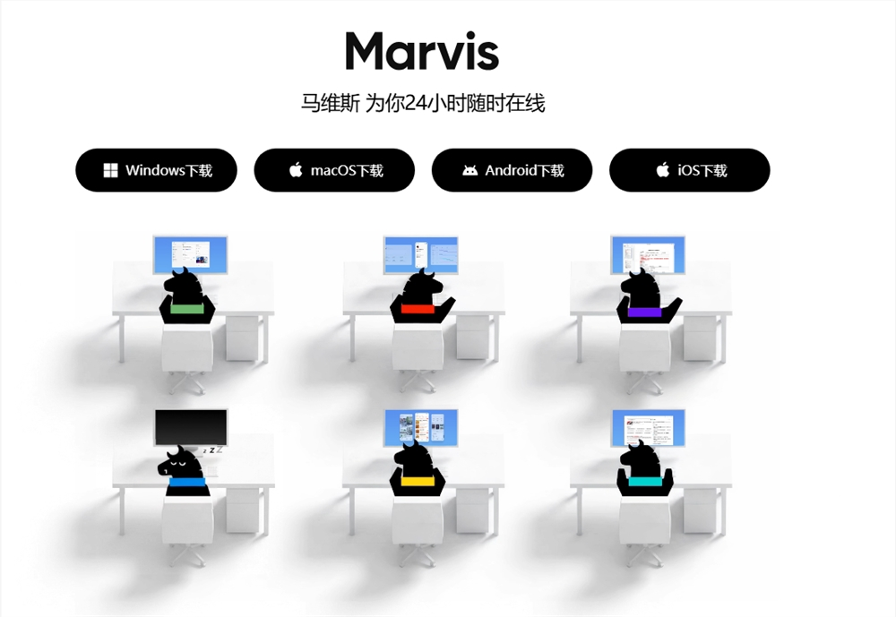

AI Daily: iOS 27 Introduces Seamless ChatGPT Toggle; Baidu Expands Wenxin Platform; Google Debuts Gemini 3.5 Flash
Welcome to [AI Daily] — your daily compass for navigating the AI landscape. Each edition curates the sector's top stories for developers, offering an incisive look at emerging trends and cutting-edge AI products.
Explore new AI offerings: https://app.aibase.com/zh
1. Apple iOS 27 Overhaul: Siri Enters the 'Dual-Mode' Era With Native ChatGPT Toggling
With iOS 27, Apple has delivered a deep architectural upgrade to Siri, introducing a standalone Siri mode and a dedicated ChatGPT mode — toggled at will from system settings.

📌 🍎 iOS 27 introduces a 'dual-mode' Siri architecture. 🔀 Users may toggle between Siri and ChatGPT modes from settings.
2. Baidu Expands Wenxin Platform, Opens Free AI Compute Resources
Baidu has announced a full-scale expansion of its Wenxin Yiyan platform, offering developers expanded free AI compute resources to lower the barrier for large-model application development.

3. Google Debuts Gemini 3.5 Flash With Major Performance Gains
Google has formally launched Gemini 3.5 Flash, delivering 3x faster inference and extended context-window support.

📌 ⚡ Gemini 3.5 Flash achieves 3x inference acceleration. 📊 Extended context windows unlock broader use-case applicability.
4. OpenAI Unveils GPT-5.6 Preview
OpenAI has released GPT-5.6 in preview, achieving significant advances in reasoning capability and multimodal comprehension.

5. Alibaba Cloud Adds AI Model Tuning and Deployment Capabilities
Alibaba Cloud has upgraded its AI model service platform, introducing automated model tuning and deployment capabilities.
6. Kimi Debuts AI Writing Assistant
Moonshot AI's Kimi has introduced an AI writing assistant capable of long-form text generation and multi-style output.
📌 ✍️ Kimi's AI writing assistant goes live with long-form generation support. 🔄 Writing style and tone are fully customizable.
7. ByteDance Launches Seedance 2.0 Mini, a Cost-Efficient Video Generation Model
ByteDance's Volcano Engine has unveiled Seedance 2.0 Mini, a video generation model purpose-built for cost efficiency.
📌 🎬 Seedance 2.0 Mini halves per-second generation costs. 🎥 Multiple video styles and resolutions are supported.
8. DeepSeek Closes $7B+ Series A, a Record-Breaking Round
DeepSeek has raised over $7 billion in its Series A, pushing its valuation past $50 billion — a figure that places it among the world's most richly valued AI startups.
📌 💰 DeepSeek closes a $7B+ Series A. 📈 Valuation surpasses $50 billion, marking a milestone in AI venture financing.